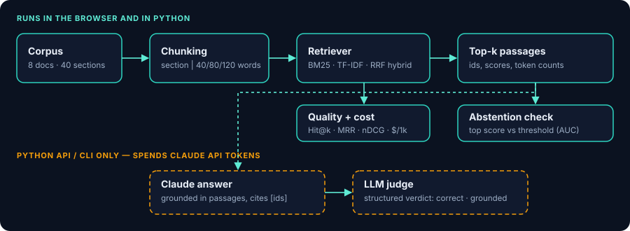

RAG evaluation · accuracy × latency × cost
Which retrieval configuration is actually worth its cost?
Pick a chunking strategy, retriever and top-k, then see retrieval quality, estimated prompt cost and measured latency on a 32-question benchmark. Everything runs in your browser.
How to read this: the corpus is synthetic (a fictional lender's mortgage-insurance handbook). Retrieval metrics and latency are computed live. No LLM is called — answers come from a deterministic extractive baseline, and costs use illustrative prices that you can compare but should replace with your provider's.
1 · Configure
2 · Explore the trade-off
All 36 configurations. The line joins the Pareto frontier: configurations no other setting beats on both quality and cost. Click a point to load it.
3 · Inspect a question
4 · Know when not to answer
A grounded assistant should refuse when the handbook has no answer. This asks a simple question: can the top retrieval score tell 32 answerable questions from 10 out-of-scope ones? Uses the retriever selected above.
5 · Where the hard questions are
Each row is a benchmark question, each column one of the 36 configurations. Teal = the gold section was retrieved, rose = missed. Rows are sorted hardest first.
6 · Try your own query
About this project

- Python toolkit (
src/evallab): chunking, BM25, TF-IDF, reciprocal-rank fusion, metrics, cost model, CLI and a FastAPI service. - Parity-tested: this page runs a JavaScript port of the same code; a Node test checks it reproduces the Python metrics on all 36 configurations.
- Claude API (Python only):
evallab generate,evallab eval-llmand the/answerendpoint answer from retrieved passages with citations, abstain when the answer is missing, and can be graded by an LLM judge. This page never sends anything to an LLM and never asks for an API key. - Limits: 32 hand-written questions over 40 sections is small, so many configurations score similarly. Treat it as a demonstration of the method, not a benchmark.
Built by Varnika Singh · GitHub